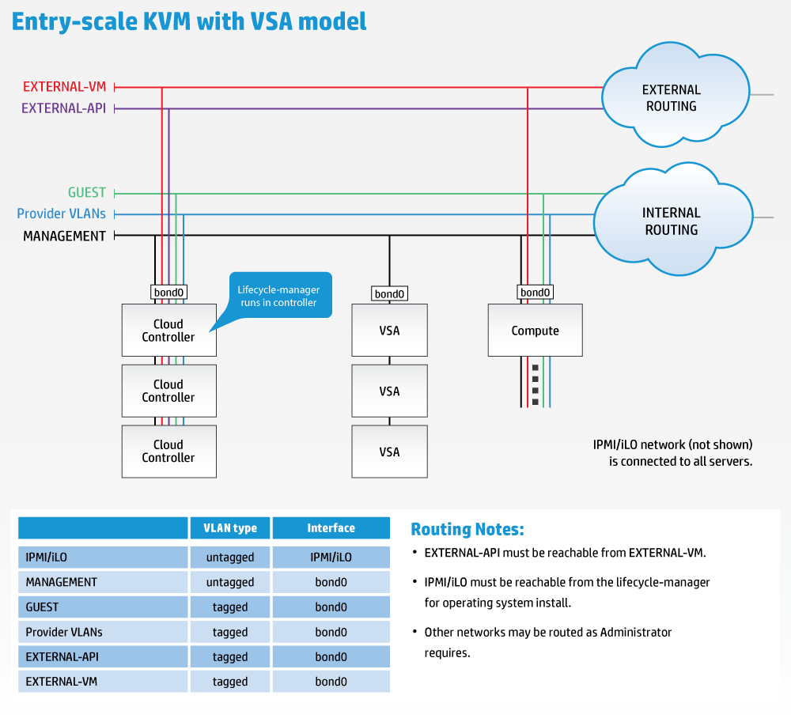
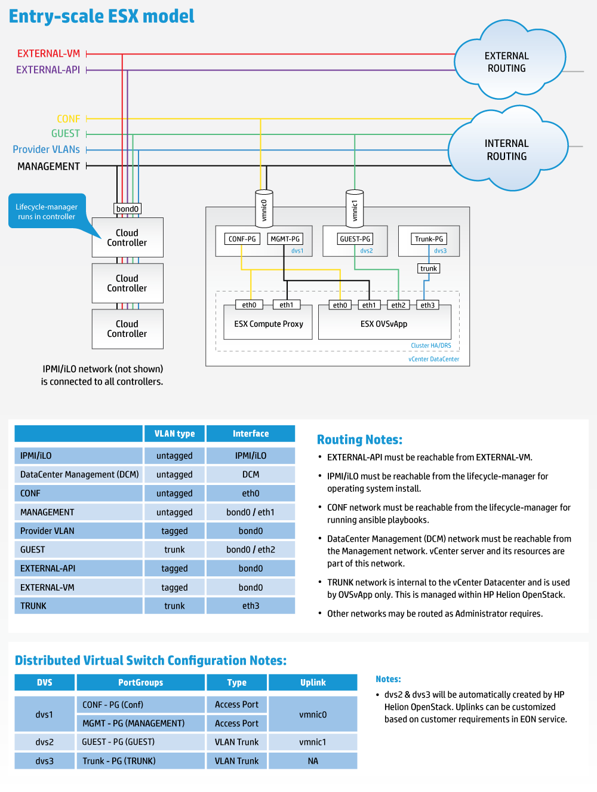
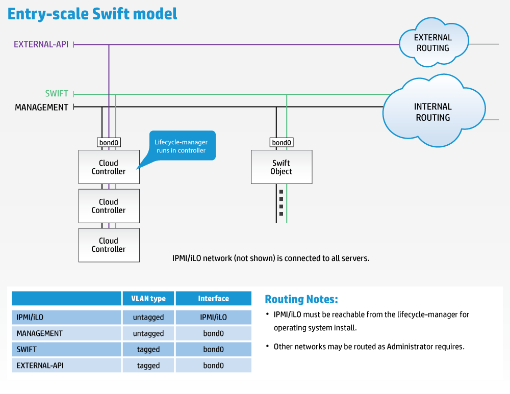
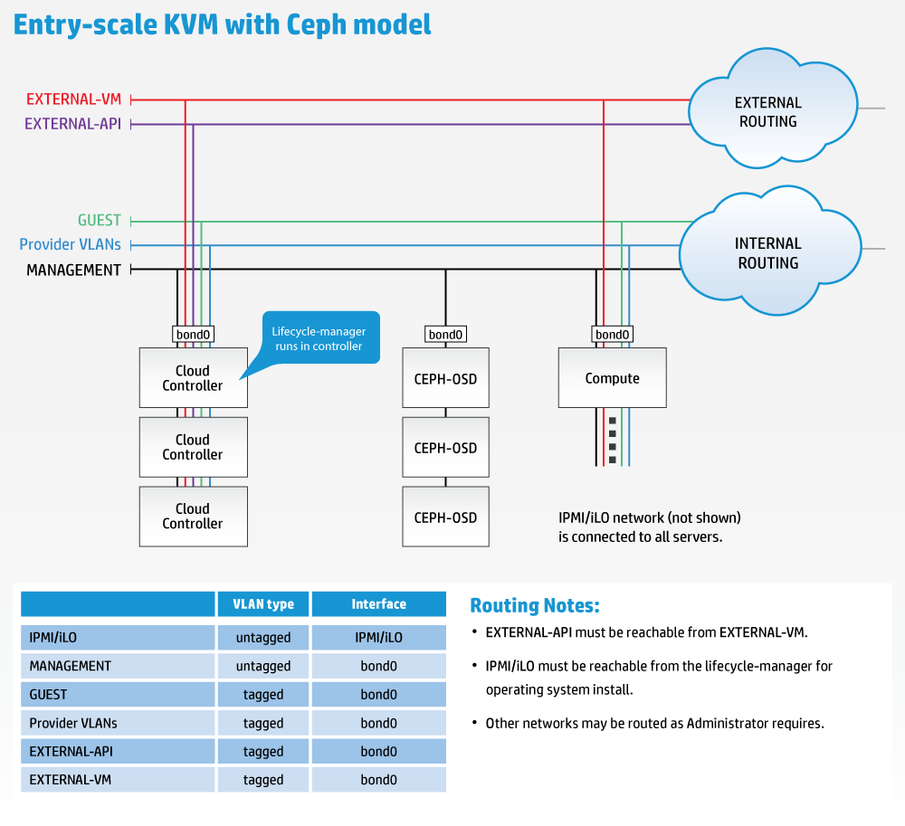
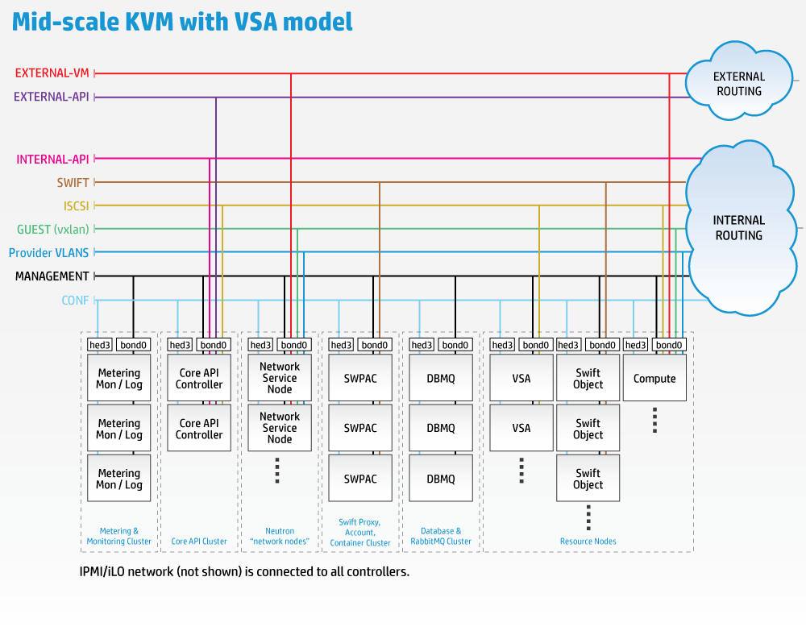
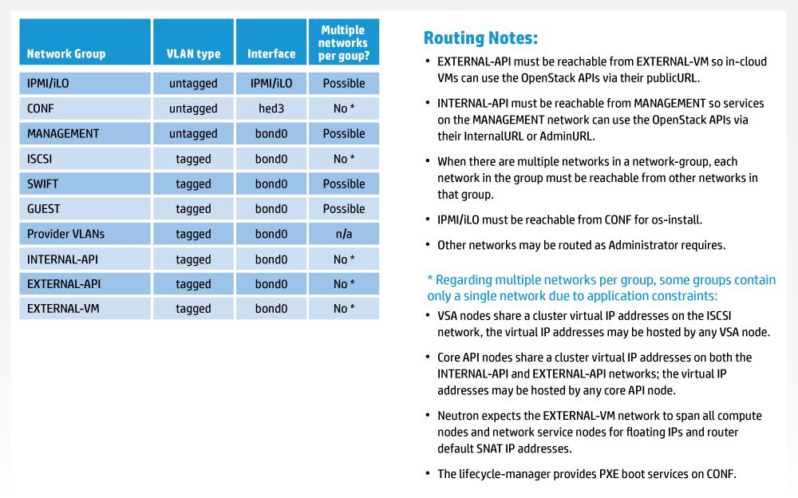
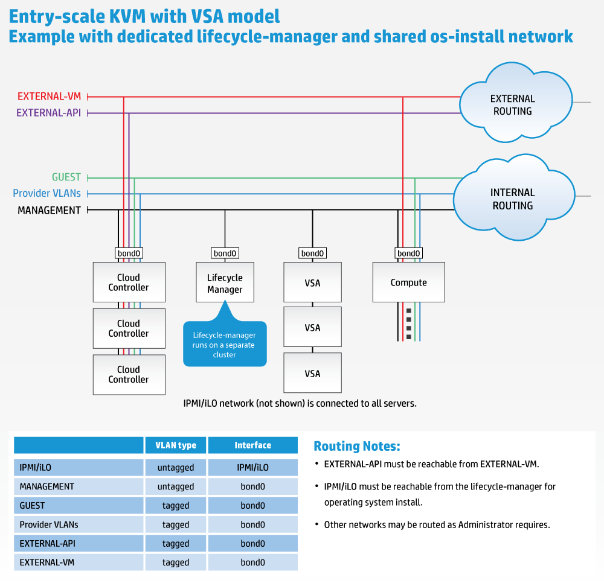

The HPE Helion OpenStack 2.0 system ships with a collection of pre-qualified example configurations. These are designed to help you to get up and running quickly with a minimum number of configuration changes.
The HPE Helion OpenStack input model allows a wide variety of configuration parameters that may, at first glance, appear daunting. The example configurations are designed to simplify this process by providing pre-built and pre-qualified examples that need only a minimum number of modifications to get started.
This section briefly describes the various example configurations and their capabilities. It also describes in detail, for the entry-scale-kvm-vsa example, how you can adapt the input model to work in your environment.
HPE Helion OpenStack 2.0 ships with two classes of sample cloud models: examples and tech-preview. The models in the examples directory have been qualified by our Quality Engineering team, while the tech-preview models are more experimental.
The following pre-qualified examples are shipped with HPE Helion OpenStack 2.0:
These systems are designed to provide an entry-level solution that can be scaled from a small number of nodes to a moderately high node count (approximately 100 compute nodes, for example).
The tech-preview configuration includes the following model:
In this model, the cloud control plane is subdivided into a number of dedicated service clusters to provide more processing power for individual control plane elements. This enables a greater number of resources to be supported (compute nodes, Swift object servers). This model also shows how a segmented network can be expressed in the HPE Helion OpenStack model.
This model provides a KVM-based cloud with VSA for volume storage, and has been tested to a scale of 100 compute nodes.
The example is focused on the minimum server count to support a highly-available (HA) compute cloud deployment. The first (manually installed) server, often referred to as the deployer or lifecycle-manager, is also used as one of the controller nodes. This model consists of a minimum server count of seven, with three controllers, three VSA storage servers, and one compute server. Swift storage in this example is contained on the controllers.
Note that the VSA storage requires a minimum of three servers for a HA configuration, although the deployment will work with as little as one VSA node.
This model can also be deployed without the VSA servers and configured to use an external storage device, such as a 3PAR array, which would reduce the minimum server count to four.

Download a high-resolution version
The example requires the following networks:
All of these networks are configured to be presented via a pair of bonded NICs. The example also enables provider VLANs to be configured in Neutron on this interface.
In the diagram, "External Routing" refers to whatever routing you want to provide to allow users to access the External API and External VM networks. Note that the EXTERNAL_API network must be reachable from the EXTERNAL_VM network if you want virtual machines to be able to make API calls to the cloud. "Internal Routing" refers to whatever routing you want to provide to allow administrators to access the Management network.
If you are using HPE Helion OpenStack to install the operating system, then an IPMI/iLO network connected to the IPMI/iLO ports of all servers and routable from the lifecycle-manager server is also required for BIOS and power management of the nodes during the operating system installation process.
The example uses the following disk configurations:
This example shows how to integrate HPE Helion OpenStack with ESX. The controller configuration is essentially the same as in the KVM example, but the resource nodes are provided by vCenter. In addition, a number of controller virtual machines are created for each vCenter cluster: one ESX Compute virtual machine (which provides the nova-compute proxy for vCenter) and one OVSvApp virtual machine per cluster member (which provides network access). These virtual machines are created automatically by HPE Helion OpenStack as part of activating the vCenter cluster, and are therefore not defined in the example.

Download a high-resolution version
The physical networking configuration is also largely the same as the KVM example, with the exception of the GUEST network which uses tenant VLANs as the Neutron networking model rather than VxLAN.
A separate configuration network (CONF) is required for configuration access from the lifecycle-manager. This network must be reachable from the Management network.
This example shows how HPE Helion OpenStack can be configured to provide a Swift-only configuration, consisting of three controllers and one or more Swift object servers.

Download a high-resolution version
The example requires the following networks:
All of these networks are configured to be presented via a pair of bonded NICs. The example also enables provider VLANs to be configured in Neutron on this interface.
In the diagram "External Routing" refers to whatever routing you want to provide to allow users to access the External API. "Internal Routing" refers to whatever routing you want to provide to allow administrators to access the Management network.
If you are using HPE Helion OpenStack to install the operating system, then an IPMI/iLO network connected to the IPMI/iLO ports of all servers and routable from the lifecycle-manager is also required for BIOS and power management of the node during the operating system installation process.
In the example the controllers use one disk for the operating system and two disks for Swift proxy and account storage. The Swift object servers use one disk for the operating system and four disks for Swift storage. These values can be modified to suit your environment.
This example provides a KVM-based cloud using Ceph for volume storage. This controller and compute configuration are essentially the same as in the KVM example, but the backend Cinder storage is provided by Ceph.

The mid-scale model, which is included as a technology preview in HPE Helion OpenStack 2.0, illustrates two important aspects of configuring HPE Helion OpenStack for increased scale. The controller services are distributed across a greater number of controllers and a number of the networks are configured as multiple L3 segments (implementing per-rack networking).


Download a high-resolution version
The distribution of services across controllers is only one possible configuration, and other combinations can also be expressed.
This section covers the changes that need to be made to the input model to deploy and run this cloud model in your environment.
This section is written from the perspective of the entry-scale-kvm-vsa example, although the same principles apply to all of the examples.
There are two categories of modifications that we will look at:
Note that, as a convention, the examples use upper case for the object names, but these strings are only used to define the relationships between objects and have no specific significance to the configuration processor. You can change the names to values that are relevant to your context providing you do so consistently across the input model.
This section covers the minimum set of changes needed to localize the cloud for your environment. This assumes you are using other features of the example unchanged:
You will need to allocate site specific CIDRs and VLANs for these networks and update these values in the networks.yml file. The example models define the following networks:
| Network | CIDR | VLAN ID | Tagged / Untagged |
|---|---|---|---|
| External API | 10.0.1.0/24 | 101 | Tagged |
| External VM | Addresses configured by Neutron, leave blank in the file. | 102 | Tagged |
| Guest | 10.1.1.0/24 | 103 | Tagged |
| Management | 192.168.10.0/24 | 100 | Untagged |
You will need to edit this file to provide your local values for these networks.
The CIDR for the External VM network is configured separately using the Neutron API. (For instructions, see HPE Helion OpenStack 2.0: Creating an External Network.) You will only specify its VLAN ID during the installation process.
The Management network is shown as untagged. This is required if you are using this network to PXE install the operating system on the cloud nodes.
The example networks.yml file is shown below. Modify the bolded fields to reflect your site values.
networks:
#
# This example uses the following networks
#
# Network CIDR VLAN
# ------- ---- ----
# External API 10.0.1.0/24 101 (tagged)
# External VM see note 1 102 (tagged)
# Guest 10.1.1.0/24 103 (tagged)
# Management 192.168.10.0/24 100 (untagged)
#
# Notes:
# 1. Defined as part of Neutron configuration
#
# Modify these values to match your environment
#
- name: EXTERNAL-API-NET
vlanid: 101
tagged-vlan: true
cidr: 10.0.1.0/24
gateway-ip: 10.0.1.1
network-group: EXTERNAL-API
- name: EXTERNAL-VM-NET
vlanid: 102
tagged-vlan: true
network-group: EXTERNAL-VM
- name: GUEST-NET
vlanid: 103
tagged-vlan: true
cidr: 10.1.1.0/24
gateway-ip: 10.1.1.1
network-group: GUEST
- name: MANAGEMENT-NET
vlanid: 100
tagged-vlan: false
cidr: 192.168.10.0/24
gateway-ip: 192.168.10.1
network-group: MANAGEMENT
This file maps Ethernet port names to specific bus slots. Due to inherent race conditions associated with multiple PCI device discovery there is no guarantee that Ethernet devices will be named as expected by the operating system, and it is possible that different port naming will exist on different servers with the same physical configuration.
To provide a deterministic naming pattern, the input model supports an explicit mapping from PCI bus address to a user specified name. HPE Helion OpenStack uses the prefix hed (Helion Ethernet Device) to name such devices to avoid any name clashes with the eth names assigned by the operating system.
The example nic_mappings.yml file is shown below.
nic-mappings:
- name: HP-DL360-4PORT
physical-ports:
- logical-name: hed1
type: simple-port
bus-address: "0000:07:00.0"
- logical-name: hed2
type: simple-port
bus-address: "0000:08:00.0"
- logical-name: hed3
type: simple-port
bus-address: "0000:09:00.0"
- logical-name: hed4
type: simple-port
bus-address: "0000:0a:00.0"
- name: MY-2PORT-SERVER
physical-ports:
- logical-name: hed3
type: simple-port
bus-address: "0000:04:00.0"
- logical-name: hed4
type: simple-port
bus-address: "0000:04:00.1"
This defines two sets of NIC mappings, representing two different physical server types. The name of each mapping is used as a value in the servers.yml file to associate each server with its required mapping. This enables the use of different server models or servers with different network hardware.
Each mapping lists a set of ports with the following information:
The PCI bus address can be found using the lspci command on one of the servers. This command can produce a lot of output, so you can use the following command which will limit the output to list Ethernet class devices only:
sudo lspci -D |grep -i eth
Here is an example output:
$ sudo lspci -D |grep -i eth 0000:02:00.0 Ethernet controller: Broadcom Corporation NetXtreme BCM5719 Gigabit Ethernet PCIe (rev 01) 0000:02:00.1 Ethernet controller: Broadcom Corporation NetXtreme BCM5719 Gigabit Ethernet PCIe (rev 01) 0000:02:00.2 Ethernet controller: Broadcom Corporation NetXtreme BCM5719 Gigabit Ethernet PCIe (rev 01) 0000:02:00.3 Ethernet controller: Broadcom Corporation NetXtreme BCM5719 Gigabit Ethernet PCIe (rev 01) 0000:04:00.0 Ethernet controller: Intel Corporation 82599ES 10-Gigabit SFI/SFP+ Network Connection (rev 01) 0000:04:00.1 Ethernet controller: Intel Corporation 82599ES 10-Gigabit SFI/SFP+ Network Connection (rev 01)
To localize this file, replace the mapping names with the names of your choice and enumerate the ports as required.
This file is used to define how the network interfaces are to be configured. The example reflects the slightly different configuration of controller, compute nodes, and VSA nodes.
If network bonding is to be used, this file specifies how bonding is to be set up. It also specifies which networks are to be associated with each interface.
The example uses a bond of interfaces hed3 and hed4. You only need to modify this file if you have mapped your physical ports to different names, or if you need to modify the bond options.
The section of configuration file is shown below, which will create a bonded interface using the named hed3 and hed4 NIC mappings described in the previous section.
- name: CONTROLLER-INTERFACES
network-interfaces:
- name: BOND0
device:
name: bond0
bond-data:
options:
mode: active-backup
miimon: 200
primary: hed3
provider: linux
devices:
- name: hed3
- name: hed4
network-groups:
- EXTERNAL-API
- EXTERNAL-VM
- GUEST
- MANAGEMENT
If your system cannot support bonding, then you can modify this specification to specify a non-bonded interface, for example using device hed3:
- name: CONTROLLER-INTERFACES
network-interfaces:
- name: hed3
device:
name: hed3
network-groups:
- EXTERNAL-API
- EXTERNAL-VM
- GUEST
- MANAGEMENT
This file defines the networks groups used in your cloud. A network-group defines the traffic separation model, and all of the properties that are common to the set of L3 networks that carry each type of traffic. They define where services and load balancers are attached to the network model and the routing within that model.
In this example, the following network groups are defined:
Most of the values in this file should be left unmodified if you are using the network model defined by the example. More complex modifications are supported but are outside the scope of this document.
However, the values related to the external API network are site-specific and need to be modified:
The example network_groups.yml file is shown below, modify the bolded fields to reflect your site values.
# External API
#
# This is the network group that users will use to
# access the public API endpoints of your cloud
#
- name: EXTERNAL-API
hostname-suffix: extapi
load-balancers:
- provider: ip-cluster
name: extlb
# If external-name is set then public urls in keystone
# will use this name instead of the IP address
# You must either set this to a name that can be resolved
# in your network
# or comment out this line to use IP addresses
external-name:
tls-components:
- default
roles:
- public
cert-file: my-public-cert
The above bolded sections as follows:
external-name - The external name defines how the public URLs will be registered in Keystone. Users of your cloud will need to be able to resolve this URL to access the cloud APIs, and if you are using the TLS, the name must match the certificate used.
Because this value is difficult to change after initial deployment, this value is left blank in the supplied example which prevents the configuration processor from running until a value has been supplied. If you want to register the public URLs as IP addresses instead of a name, then you can comment out this line.
cert-file - Provide the name of the file located in ~/helion/my_cloud/config/tls/certs/ that will be used for your cloud endpoints. As shown above, this can be either a single certificate for all endpoints or a default certificate file and a set of service-specific certificate files.
tls-components - If you do not want to use a TLS for the public URLs then change the entry that says tls-components to components.
This file is where you provide the details of the physical servers that make up your cloud. There are two sections to this file: baremetal and servers:
baremetal:
# NOTE: These values need to be changed to match your environment.
# Define the network range that contains the ip-addr values for
# the individual servers listed below.
subnet: 192.168.10.0
netmask: 255.255.255.0
The two values in this section are used to configure cobbler for operating system installation and must match the network values for the addresses given for the servers.
The servers section below provides the details of each individual server. For example, here are the details for the first controller:
servers:
# Controllers
- id: controller1
ip-addr: 192.168.10.3
role: CONTROLLER-ROLE
server-group: RACK1
nic-mapping: HP-DL360-4PORT
mac-addr: b2:72:8d:ac:7c:6f
ilo-ip: 192.168.9.3
ilo-password: password
ilo-user: admin
Here is a description of each of the above bolded sections:
id - A name you provide to uniquely identify a server. This can be any string which is makes sense in your context, such as an asset tag, descriptive name, etc. The system will use this value to remember how the server has been allocated.
ip-addr - The IP address that the system will use for SSH connections to the server for deployment and configuration changes. This address must be in the IP range of one of the networks in the model. In the example, the servers are provided with addresses from the MANAGEMENT network.
role - A string that refers to an entry in server_roles.yml that tells the system how to configure the disks and network interfaces for this server. Roles are also used to define which servers can be used for specific purposes. Adding and changing roles is beyond the scope of this walkthrough - for more information, see HPE Helion OpenStack 2.0 Input Model.
server-group - Tells the system how this server is physically related to networks and other servers. Server groups are used to ensure that servers in a cluster are selected from different physical groups. The example provides a set of server groups that divide the servers into three sets called RACK1, RACK2, and RACK3. Modifying the server group structure is beyond the scope of this walkthrough - for more information, see HPE Helion OpenStack 2.0 Input Model.
nic-mapping - The name of a network port mapping definition (for more information, see Nic_mappings.yml). You need to set this to the mapping that corresponds to this server.
mac-addr - The MAC address of the interface associated with this server that will be used for PXE boot.
ilo-ip - The IP address of the iLO or IPMI port for this server.
ilo-user and ilo-password - The login details used to access the iLO or IPMI port of this server. The iLO password value can be provided as an OpenSSL encrypted string. (For instructions on how to generate encrypted passwords, see Configure Your Environment.
This section covers additional changes that you can make to further adapt the example to your environment:
The disk configuration of the controllers consists of two sections: a definition of a volume group that provides a number of file-systems for various subsystems, and device-group that provides disk capacity for Swift.
The root volume group (hlm-vg) is divided into a number of logical volumes that provide separate file systems for the various services that are co-hosted on the controllers in the entry-scale examples. The capacity of each file system is expressed as a percentage of the overall volume group capacity. Because not all file system usage scales linearly, two different disk configurations are provided:
As supplied, the example uses the smaller disk model. To use the larger disk model you need to modify the disk-models parameter in the server_roles.yml file, as shown below:
server-roles:
- name: CONTROLLER-ROLE
interface-model: CONTROLLER-INTERFACES
disk-model: CONTROLLER-1TB-DISKS
To add additional disks to the root volume group, you need to modify the volume group definition in whichever disk model you are using. The following example shows adding an additional disk, /dev/sdd to the disks_controller.yml file:
disk-models:
- name: CONTROLLER-DISKS
volume-groups:
- name: hlm-vg
physical-volumes:
# NOTE: 'sda_root' is a templated value. This value is checked in
# os-config and replaced by the partition actually used on sda
#e.g. sda1 or sda5
- /dev/sda_root
- /dev/sdd
Swift storage is configured as a device-group and has a syntax that allows disks to be allocated to specific rings. In the example, two disks are allocated to Swift to be shared by the account, container, and object-0 rings.
device-groups:
- name: swiftobj
devices:
- name: /dev/sdb
- name: /dev/sdc
# Add any additional disks for swift here
# -name: /dev/sdd
# -name: /dev/sde
consumer:
name: swift
attrs:
rings:
- account
- container
- object-0
For instruction to configure additional Swift storage, see HPE Helion OpenStack 2.0: Allocating Disk Drives for Object Storage.
VSA storage is configured as a device-group and has a syntax that allows disks to be allocated for data storage or for adaptive optimization (caching). As a best practice, you should use solid state drives for adaptive optimization. The example disk configuration for VSA nodes has two disks, one for data and one of adaptive optimization. (For more information, see VSA with AO or without AO.)
device-groups:
- name: vsa-data
consumer:
name: vsa
usage: data
devices:
- name: /dev/sdc
- name: vsa-cache
consumer:
name: vsa
usage: adaptive-optimization
devices:
- name: /dev/sdb
Additional capacity can be added by adding more disks to the vsa-data device group. Similarly, caching capacity can be increased by adding more high speed storage devices to the vsa-cache device group.
The example disk configuration for compute nodes consists of two volume groups: one for the operating system and one for the ephemeral storage for virtual machines, with one disk allocated to each.
Additional virtual machine ephemeral storage capacity can be configured by adding additional disks to the vg-comp volume group. The following example shows the addition of two more disks, /dev/sdc and /dev/sdd, to the disks_compute.yml file:
- name: vg-comp
physical-volumes:
- /dev/sdb
- /dev/sdc
- /dev/sdd
logical-volumes:
- name: compute
size: 95%
mount: /var/lib/nova
fstype: ext4
mkfs-opts: -O large_file
All of the examples described above host the lifecycle-manager on one of the control nodes. It is also possible to deploy this service on a dedicated node, as shown below:

Download a high-resolution version
A typical use case for wanting to run the dedicated lifecycle-manager is to be able to test the deployment of different configurations without having to re-install the first server. Some administrators might also prefer the additional security of keeping all of the configuration data on a separate server from those that users of the cloud connect to (although all of the data can be encrypted and SSH keys can be password protected).
This requires the following changes to the configuration files:
The snippet below shows the addition of a single node cluster into the control plane to host the lifecycle-manager service. Note that, in addition to adding the new cluster, you also have to remove the lifecycle-manager component from the cluster1 in the examples:
clusters:
- name: cluster0
cluster-prefix: c0
server-role: LIFECYCLE-MANAGER-ROLE
member-count: 1
allocation-policy: strict
service-components:
- lifecycle-manager
- name: cluster1
cluster-prefix: c1
server-role: CONTROLLER-ROLE
member-count: 3
allocation-policy: strict
service-components:
- lifecycle-manager
- ntp-server
This specifies a single node of role LIFECYCLE-MANAGER-ROLE hosting the lifecycle-manager.
The snippet below shows the insertion of the new server roles definition:
server-roles:
- name: LIFECYCLE-MANAGER-ROLE
interface-model: LIFECYCLE-MANAGER-INTERFACES
disk-model: LIFECYCLE-MANAGER-DISKS
- name: CONTROLLER-ROLE
This defines a new server role which references a new interface-model and disk-model to be used when configuring the server.
The snippet below shows the insertion of the network-interface info:
- name: LIFECYCLE-MANAGER-INTERFACES
network-interfaces:
- name: BOND0
device:
name: bond0
bond-data:
options:
mode: active-backup
miimon: 200
primary: hed3
provider: linux
devices:
- name: hed3
- name: hed4
network-groups:
- MANAGEMENT
This assumes that the server uses the same physical networking layout as the other servers in the example. For details on how to modify this to match your configuration, see Net_interfaces.yml.
In the examples, disk-models are provided as separate files (this is just a convention, not a limitation) so the following should be added as a new file named disks_lifecycle_manager.yml:
---
product:
version: 2
disk-models:
- name: LIFECYCLE-MANAGER-DISKS
# Disk model to be used for Lifecycle Managers nodes
# /dev/sda_root is used as a volume group for /, /var/log and /var/crash
# sda_root is a templated value to align with whatever partition is really used
# This value is checked in os config and replaced by the partition actually used
# on sda e.g. sda1 or sda5
volume-groups:
- name: hlm-vg
physical-volumes:
- /dev/sda_root
logical-volumes:
# The policy is not to consume 100% of the space of each volume group.
# 5% should be left free for snapshots and to allow for some flexibility.
- name: root
size: 80%
fstype: ext4
mount: /
- name: crash
size: 15%
mount: /var/crash
fstype: ext4
mkfs-opts: -O large_file
consumer:
name: os
The snippet below shows the insertion of an additional server used for hosting the lifecycle-manager. Provide the address information here for the server you are running on, i.e., the node where you have installed the HPE Helion OpenStack ISO.
servers:
# NOTE: Addresses of servers need to be changed to match your environment.
#
# Add additional servers as required
#Lifecycle-manager
- id: lifecycle-manager
ip-addr: <your IP address here>
role: LIFECYCLE-MANAGER-ROLE
server-group: RACK1
# ipmi information is not needed
# Controllers
- id: controller1
ip-addr: 192.168.10.3
role: CONTROLLER-ROLE